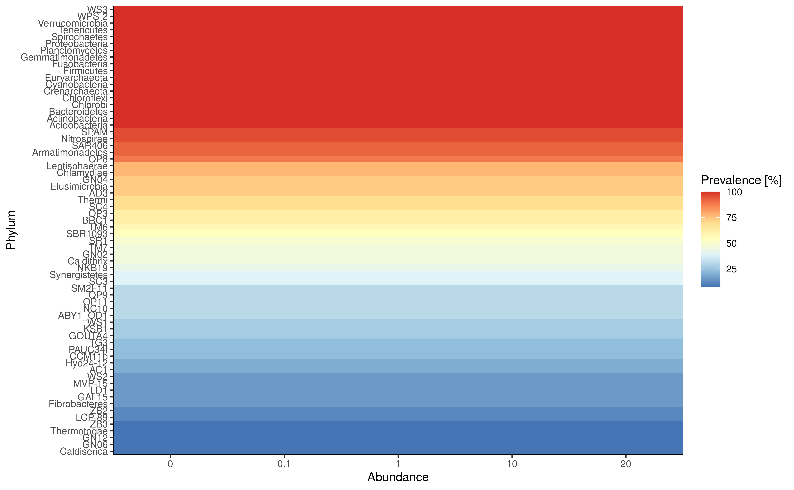
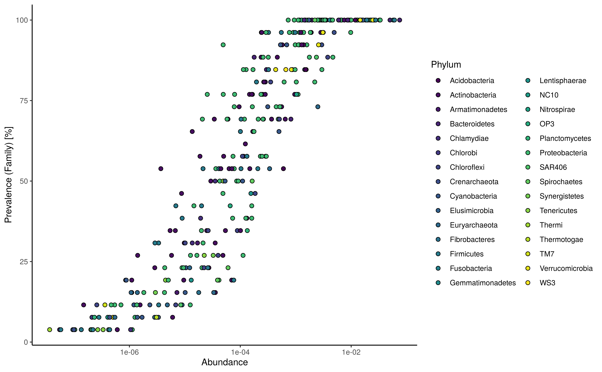

miaViz
miaViz.RmdmiaViz implements plotting function to work with
TreeSummarizedExperiment and related objects in a context
of microbiome analysis. For more general plotting function on
SummarizedExperiment objects the scater
package offers several options, such as plotColData,
plotExpression and plotRowData.
Installation
To install miaViz, install BiocManager
first, if it is not installed. Afterwards use the install
function from BiocManager and load miaViz.
if (!requireNamespace("BiocManager", quietly = TRUE))
install.packages("BiocManager")
BiocManager::install("miaViz")
#> 'getOption("repos")' replaces Bioconductor standard repositories, see
#> 'help("repositories", package = "BiocManager")' for details.
#> Replacement repositories:
#> CRAN: https://cloud.r-project.org
#> Bioconductor version 3.18 (BiocManager 1.30.21), R 4.3.1 (2023-06-16)
#> Warning: package(s) not installed when version(s) same as or greater than current; use
#> `force = TRUE` to re-install: 'miaViz'
#> Old packages: 'dbplyr', 'TreeSummarizedExperiment', 'pkgload', 'rstudioapi',
#> 'Matrix'Abundance plotting
in contrast to other fields of sequencing based fields of research
for which expression of genes is usually studied, microbiome research
uses the more term Abundance to described the numeric data
measured and analyzed. Technically, especially in context of
SummarizedExperiment objects, there is no difference.
Therefore plotExpression can be used to plot
Abundance data.
plotAbundance can be used as well and as long as
rank is set NULL, it behaves as
plotExpression.
plotAbundance(GlobalPatterns, rank = NULL,
features = "549322", assay.type = "counts")
However, if the rank is set not NULL a bar
plot is returned. At the same time the features argument
can be set to NULL (default).
GlobalPatterns <- transformCounts(GlobalPatterns, method = "relabundance")
plotAbundance(GlobalPatterns, rank = "Kingdom", assay.type = "relabundance")
With subsetting to selected features the plot can be fine tuned.
prev_phylum <- getPrevalentTaxa(GlobalPatterns, rank = "Phylum",
detection = 0.01)
plotAbundance(GlobalPatterns[rowData(GlobalPatterns)$Phylum %in% prev_phylum],
rank = "Phylum",
assay.type = "relabundance")
The features argument is reused for plotting data along
the different samples. In the next example the SampleType is
plotted along the samples. In this case the result is a list, which can
combined using external tools, for example patchwork.
library(patchwork)
plots <- plotAbundance(GlobalPatterns[rowData(GlobalPatterns)$Phylum %in% prev_phylum],
features = "SampleType",
rank = "Phylum",
assay.type = "relabundance")
plots$abundance / plots$SampleType +
plot_layout(heights = c(9, 1))
Further example about composition barplot can be found at Orchestrating Microbiome Analysis (Lahti, Shetty, and Ernst 2021).
Prevalence plotting
To visualize prevalence within the dataset, two functions are
available, plotTaxaPrevalence,
plotPrevalenceAbundance and
plotPrevalence.
plotTaxaPrevalence produces a so-called landscape plot,
which visualizes the prevalence of samples across abundance
thresholds.
plotTaxaPrevalence(GlobalPatterns, rank = "Phylum",
detections = c(0, 0.001, 0.01, 0.1, 0.2))
plotPrevalenceAbundance plot the prevalence depending on
the mean relative abundance on the chosen taxonomic level.
plotPrevalentAbundance(GlobalPatterns, rank = "Family",
colour_by = "Phylum") +
scale_x_log10()
plotPrevalence plot the number of samples and their
prevalence across different abundance thresholds. Abundance steps can be
adjusted using the detections argument, whereas the
analyzed prevalence steps is set using the prevalences
argument.
plotPrevalence(GlobalPatterns,
rank = "Phylum",
detections = c(0.01, 0.1, 1, 2, 5, 10, 20)/100,
prevalences = seq(0.1, 1, 0.1))
Tree plotting
The information stored in the rowTree can be directly
plotted. However, sizes of stored trees have to be kept in mind and
plotting of large trees rarely makes sense.
For this example we limit the information plotted to the top 100 taxa as judged by mean abundance on the genus level.
altExp(GlobalPatterns,"Genus") <- agglomerateByRank(GlobalPatterns,"Genus")
altExp(GlobalPatterns,"Genus") <- addPerFeatureQC(altExp(GlobalPatterns,"Genus"))
rowData(altExp(GlobalPatterns,"Genus"))$log_mean <-
log(rowData(altExp(GlobalPatterns,"Genus"))$mean)
rowData(altExp(GlobalPatterns,"Genus"))$detected <-
rowData(altExp(GlobalPatterns,"Genus"))$detected / 100
top_taxa <- getTopTaxa(altExp(GlobalPatterns,"Genus"),
method="mean",
top=100L,
assay.type="counts")
#> Warning: useNames = NA is deprecated. Instead, specify either useNames = TRUE
#> or useNames = TRUE.Colour, size and shape of tree tips and nodes can be decorated based
on data present in the SE object or by providing additional
information via the other_fields argument. Note that
currently information for nodes have to be provided via the
other_fields arguments.
Data will be matched via the node or label
argument depending on which was provided. label takes
precedent.
plotRowTree(altExp(GlobalPatterns,"Genus")[top_taxa,],
tip_colour_by = "log_mean",
tip_size_by = "detected")
Tree plot using ggtree with tip labels decorated by mean abundance (colour) and prevalence (size)
Tip and node labels can be shown as well. Setting
show_label = TRUE shows the tip labels only …
plotRowTree(altExp(GlobalPatterns,"Genus")[top_taxa,],
tip_colour_by = "log_mean",
tip_size_by = "detected",
show_label = TRUE)
Tree plot using ggtree with tip labels decorated by mean abundance (colour) and prevalence (size). Tip labels of the tree are shown as well.
… whereas node labels can be selectively shown by providing a named
logical vector to show_label.
Please note that currently ggtree can only plot node
labels in a rectangular layout.
labels <- c("Genus:Providencia", "Genus:Morganella", "0.961.60")
plotRowTree(altExp(GlobalPatterns,"Genus")[top_taxa,],
tip_colour_by = "log_mean",
tip_size_by = "detected",
show_label = labels,
layout="rectangular")Tree plot using ggtree with tip labels decorated by mean abundance (colour) and prevalence (size). Selected node and tip labels are shown.
Information can also be visualized on the edges of the tree plot.
plotRowTree(altExp(GlobalPatterns,"Genus")[top_taxa,],
edge_colour_by = "Phylum",
tip_colour_by = "log_mean")
Tree plot using ggtree with tip labels decorated by mean abundance (colour) and edges labeled Kingdom (colour) and prevalence (size)
Graph plotting
Similar to tree data, graph data can also be plotted in conjunction
with SummarizedExperiment objects. Since the graph data in
itself cannot be stored in a specialized slot, a graph object can be
provided separately or as an element from the metedata.
Here we load an example graph. As graph data, all objects types
accepted by as_tbl_graph from the tidygraph
package are supported.
data(col_graph)In the following examples, the weight data is
automatically generated from the graph data. The
SummarizedExperiment provided is required to have
overlapping rownames with the node names of the graph. Using this link
the graph plot can incorporate data from the
SummarizedExperiment.
plotColGraph(col_graph,
altExp(GlobalPatterns,"Genus"),
colour_by = "SampleType",
edge_colour_by = "weight",
edge_width_by = "weight",
show_label = TRUE)
#> This graph was created by an old(er) igraph version.
#> Call upgrade_graph() on it to use with the current igraph version
#> For now we convert it on the fly...
As mentioned the graph data can be provided from the
metadata of the SummarizedExperiment.
metadata(altExp(GlobalPatterns,"Genus"))$graph <- col_graphThis produces the same plot as shown above.
Plotting of serial data
# Load data from miaTime package
library("miaTime")
data(SilvermanAGutData, package="miaTime")
tse <- SilvermanAGutData
tse <- transformCounts(tse, method = "relabundance")
taxa <- getTopTaxa(tse, 2)
#> Warning: useNames = NA is deprecated. Instead, specify either useNames = TRUE
#> or useNames = TRUE.Data from samples collected along time can be visualized using
plotSeries. The x argument is used to
reference data from the colData to use as descriptor for
ordering the data. The y argument selects the feature to
show. Since plotting a lot of features is not advised a maximum of 20
features can plotted at the same time.
plotSeries(tse,
x = "DAY_ORDER",
y = taxa,
colour_by = "Family") If replicated data is present, data is automatically used for
calculation of the
If replicated data is present, data is automatically used for
calculation of the mean and sd and plotted as
a range. Data from different assays can be used for plotting via the
assay.type.
plotSeries(tse[taxa,],
x = "DAY_ORDER",
colour_by = "Family",
linetype_by = "Phylum",
assay.type = "relabundance")
Additional variables can be used to modify line type aesthetics.
plotSeries(tse,
x = "DAY_ORDER",
y = getTopTaxa(tse, 5),
colour_by = "Family",
linetype_by = "Phylum",
assay.type = "counts")
#> Warning: useNames = NA is deprecated. Instead, specify either useNames = TRUE
#> or useNames = TRUE.
Plotting factor data
To visualize the relative relations between two groupings among the
factor data, two functions are available for the purpose;
plotColTile and plotRowTile.
data(GlobalPatterns, package="mia")
se <- GlobalPatterns
plotColTile(se,"SampleType","Primer") +
theme(axis.text.x.top = element_text(angle = 45, hjust = 0))
DMN fit plotting
Searching for groups that are similar to each other among the
samples, could be approached with the Dirichlet Multinomial Mixtures
(Holmes, Harris, and Quince 2012). After
using runDMN from the mia package, several k
values as a number of clusters are used to observe the best fit (see
also getDMN and getBestDMNFit). To visualize
the fit using e.g. “laplace” as a measure of goodness of fit:
data(dmn_se, package = "mia")
names(metadata(dmn_se))
#> [1] "DMN"
# plot the fit
plotDMNFit(dmn_se, type = "laplace")
#> Warning: 'getDMN' is deprecated.
#> Use 'cluster' instead.
#> See help("Deprecated") and help("Now runDMN and calculateDMN are deprecated. Use cluster with DMMParam parameter and full parameter set as true instead.-deprecated").Serial data ordination and trajectories
if(!requireNamespace("devtools", quietly = TRUE)){
BiocManager::install("devtools")
}
if(!requireNamespace("miaTime", quietly = TRUE)){
devtools::install_github("microbiome/miaTime")
}Principal Coordinates Analysis using Bray-Curtis dissimilarity on the
hitchip1006 dataset:
Retrieving information about all available trajectories:
library(dplyr)
#>
#> Attaching package: 'dplyr'
#> The following objects are masked from 'package:mia':
#>
#> full_join, inner_join, left_join, right_join
#> The following objects are masked from 'package:Biostrings':
#>
#> collapse, intersect, setdiff, setequal, union
#> The following object is masked from 'package:XVector':
#>
#> slice
#> The following object is masked from 'package:Biobase':
#>
#> combine
#> The following objects are masked from 'package:GenomicRanges':
#>
#> intersect, setdiff, union
#> The following object is masked from 'package:GenomeInfoDb':
#>
#> intersect
#> The following objects are masked from 'package:IRanges':
#>
#> collapse, desc, intersect, setdiff, slice, union
#> The following objects are masked from 'package:S4Vectors':
#>
#> first, intersect, rename, setdiff, setequal, union
#> The following objects are masked from 'package:BiocGenerics':
#>
#> combine, intersect, setdiff, union
#> The following object is masked from 'package:matrixStats':
#>
#> count
#> The following objects are masked from 'package:stats':
#>
#> filter, lag
#> The following objects are masked from 'package:base':
#>
#> intersect, setdiff, setequal, union
# List subjects with two time points
selected.subjects <- names(which(table(tse$subject)==2))
# Subjects counts per number of time points available in the data
table(table(tse$subject)) %>% as.data.frame() %>%
rename(Timepoints=Var1, Subjects=Freq)
#> Timepoints Subjects
#> 1 1 928
#> 2 2 40
#> 3 3 23
#> 4 4 1
#> 5 5 14Lets look at all trajectories having two time points in the data:
# plot
p + geom_path(aes(x=X1, y=X2, group=subject),
arrow=arrow(length = unit(0.1, "inches")),
# combining ordination data and metadata then selecting the subjects
# Note, scuttle::makePerCellDF could also be used for the purpose.
data = subset(data.frame(reducedDim(tse), colData(tse)),
subject %in% selected.subjects) %>% arrange(time))+
labs(title = "All trajectories with two time points")+
theme(plot.title = element_text(hjust = 0.5))
Filtering the two time point trajectories by divergence and displaying top 10%:
library(miaTime)
# calculating step wise divergence based on the microbial profiles
tse <- getStepwiseDivergence(tse, group = "subject", time_field = "time")
#> Merging with full join...
#> 1/1006
2/1006
3/1006
4/1006
5/1006
6/1006
7/1006
8/1006
9/1006
10/1006
11/1006
12/1006
13/1006
14/1006
15/1006
16/1006
17/1006
18/1006
19/1006
20/1006
21/1006
22/1006
23/1006
24/1006
25/1006
26/1006
27/1006
28/1006
29/1006
30/1006
31/1006
32/1006
33/1006
34/1006
35/1006
36/1006
37/1006
38/1006
39/1006
40/1006
41/1006
42/1006
43/1006
44/1006
45/1006
46/1006
47/1006
48/1006
49/1006
50/1006
51/1006
52/1006
53/1006
54/1006
55/1006
56/1006
57/1006
58/1006
59/1006
60/1006
61/1006
62/1006
63/1006
64/1006
65/1006
66/1006
67/1006
68/1006
69/1006
70/1006
71/1006
72/1006
73/1006
74/1006
75/1006
76/1006
77/1006
78/1006
79/1006
80/1006
81/1006
82/1006
83/1006
84/1006
85/1006
86/1006
87/1006
88/1006
89/1006
90/1006
91/1006
92/1006
93/1006
94/1006
95/1006
96/1006
97/1006
98/1006
99/1006
100/1006
101/1006
102/1006
103/1006
104/1006
105/1006
106/1006
107/1006
108/1006
109/1006
110/1006
111/1006
112/1006
113/1006
114/1006
115/1006
116/1006
117/1006
118/1006
119/1006
120/1006
121/1006
122/1006
123/1006
124/1006
125/1006
126/1006
127/1006
128/1006
129/1006
130/1006
131/1006
132/1006
133/1006
134/1006
135/1006
136/1006
137/1006
138/1006
139/1006
140/1006
141/1006
142/1006
143/1006
144/1006
145/1006
146/1006
147/1006
148/1006
149/1006
150/1006
151/1006
152/1006
153/1006
154/1006
155/1006
156/1006
157/1006
158/1006
159/1006
160/1006
161/1006
162/1006
163/1006
164/1006
165/1006
166/1006
167/1006
168/1006
169/1006
170/1006
171/1006
172/1006
173/1006
174/1006
175/1006
176/1006
177/1006
178/1006
179/1006
180/1006
181/1006
182/1006
183/1006
184/1006
185/1006
186/1006
187/1006
188/1006
189/1006
190/1006
191/1006
192/1006
193/1006
194/1006
195/1006
196/1006
197/1006
198/1006
199/1006
200/1006
201/1006
202/1006
203/1006
204/1006
205/1006
206/1006
207/1006
208/1006
209/1006
210/1006
211/1006
212/1006
213/1006
214/1006
215/1006
216/1006
217/1006
218/1006
219/1006
220/1006
221/1006
222/1006
223/1006
224/1006
225/1006
226/1006
227/1006
228/1006
229/1006
230/1006
231/1006
232/1006
233/1006
234/1006
235/1006
236/1006
237/1006
238/1006
239/1006
240/1006
241/1006
242/1006
243/1006
244/1006
245/1006
246/1006
247/1006
248/1006
249/1006
250/1006
251/1006
252/1006
253/1006
254/1006
255/1006
256/1006
257/1006
258/1006
259/1006
260/1006
261/1006
262/1006
263/1006
264/1006
265/1006
266/1006
267/1006
268/1006
269/1006
270/1006
271/1006
272/1006
273/1006
274/1006
275/1006
276/1006
277/1006
278/1006
279/1006
280/1006
281/1006
282/1006
283/1006
284/1006
285/1006
286/1006
287/1006
288/1006
289/1006
290/1006
291/1006
292/1006
293/1006
294/1006
295/1006
296/1006
297/1006
298/1006
299/1006
300/1006
301/1006
302/1006
303/1006
304/1006
305/1006
306/1006
307/1006
308/1006
309/1006
310/1006
311/1006
312/1006
313/1006
314/1006
315/1006
316/1006
317/1006
318/1006
319/1006
320/1006
321/1006
322/1006
323/1006
324/1006
325/1006
326/1006
327/1006
328/1006
329/1006
330/1006
331/1006
332/1006
333/1006
334/1006
335/1006
336/1006
337/1006
338/1006
339/1006
340/1006
341/1006
342/1006
343/1006
344/1006
345/1006
346/1006
347/1006
348/1006
349/1006
350/1006
351/1006
352/1006
353/1006
354/1006
355/1006
356/1006
357/1006
358/1006
359/1006
360/1006
361/1006
362/1006
363/1006
364/1006
365/1006
366/1006
367/1006
368/1006
369/1006
370/1006
371/1006
372/1006
373/1006
374/1006
375/1006
376/1006
377/1006
378/1006
379/1006
380/1006
381/1006
382/1006
383/1006
384/1006
385/1006
386/1006
387/1006
388/1006
389/1006
390/1006
391/1006
392/1006
393/1006
394/1006
395/1006
396/1006
397/1006
398/1006
399/1006
400/1006
401/1006
402/1006
403/1006
404/1006
405/1006
406/1006
407/1006
408/1006
409/1006
410/1006
411/1006
412/1006
413/1006
414/1006
415/1006
416/1006
417/1006
418/1006
419/1006
420/1006
421/1006
422/1006
423/1006
424/1006
425/1006
426/1006
427/1006
428/1006
429/1006
430/1006
431/1006
432/1006
433/1006
434/1006
435/1006
436/1006
437/1006
438/1006
439/1006
440/1006
441/1006
442/1006
443/1006
444/1006
445/1006
446/1006
447/1006
448/1006
449/1006
450/1006
451/1006
452/1006
453/1006
454/1006
455/1006
456/1006
457/1006
458/1006
459/1006
460/1006
461/1006
462/1006
463/1006
464/1006
465/1006
466/1006
467/1006
468/1006
469/1006
470/1006
471/1006
472/1006
473/1006
474/1006
475/1006
476/1006
477/1006
478/1006
479/1006
480/1006
481/1006
482/1006
483/1006
484/1006
485/1006
486/1006
487/1006
488/1006
489/1006
490/1006
491/1006
492/1006
493/1006
494/1006
495/1006
496/1006
497/1006
498/1006
499/1006
500/1006
501/1006
502/1006
503/1006
504/1006
505/1006
506/1006
507/1006
508/1006
509/1006
510/1006
511/1006
512/1006
513/1006
514/1006
515/1006
516/1006
517/1006
518/1006
519/1006
520/1006
521/1006
522/1006
523/1006
524/1006
525/1006
526/1006
527/1006
528/1006
529/1006
530/1006
531/1006
532/1006
533/1006
534/1006
535/1006
536/1006
537/1006
538/1006
539/1006
540/1006
541/1006
542/1006
543/1006
544/1006
545/1006
546/1006
547/1006
548/1006
549/1006
550/1006
551/1006
552/1006
553/1006
554/1006
555/1006
556/1006
557/1006
558/1006
559/1006
560/1006
561/1006
562/1006
563/1006
564/1006
565/1006
566/1006
567/1006
568/1006
569/1006
570/1006
571/1006
572/1006
573/1006
574/1006
575/1006
576/1006
577/1006
578/1006
579/1006
580/1006
581/1006
582/1006
583/1006
584/1006
585/1006
586/1006
587/1006
588/1006
589/1006
590/1006
591/1006
592/1006
593/1006
594/1006
595/1006
596/1006
597/1006
598/1006
599/1006
600/1006
601/1006
602/1006
603/1006
604/1006
605/1006
606/1006
607/1006
608/1006
609/1006
610/1006
611/1006
612/1006
613/1006
614/1006
615/1006
616/1006
617/1006
618/1006
619/1006
620/1006
621/1006
622/1006
623/1006
624/1006
625/1006
626/1006
627/1006
628/1006
629/1006
630/1006
631/1006
632/1006
633/1006
634/1006
635/1006
636/1006
637/1006
638/1006
639/1006
640/1006
641/1006
642/1006
643/1006
644/1006
645/1006
646/1006
647/1006
648/1006
649/1006
650/1006
651/1006
652/1006
653/1006
654/1006
655/1006
656/1006
657/1006
658/1006
659/1006
660/1006
661/1006
662/1006
663/1006
664/1006
665/1006
666/1006
667/1006
668/1006
669/1006
670/1006
671/1006
672/1006
673/1006
674/1006
675/1006
676/1006
677/1006
678/1006
679/1006
680/1006
681/1006
682/1006
683/1006
684/1006
685/1006
686/1006
687/1006
688/1006
689/1006
690/1006
691/1006
692/1006
693/1006
694/1006
695/1006
696/1006
697/1006
698/1006
699/1006
700/1006
701/1006
702/1006
703/1006
704/1006
705/1006
706/1006
707/1006
708/1006
709/1006
710/1006
711/1006
712/1006
713/1006
714/1006
715/1006
716/1006
717/1006
718/1006
719/1006
720/1006
721/1006
722/1006
723/1006
724/1006
725/1006
726/1006
727/1006
728/1006
729/1006
730/1006
731/1006
732/1006
733/1006
734/1006
735/1006
736/1006
737/1006
738/1006
739/1006
740/1006
741/1006
742/1006
743/1006
744/1006
745/1006
746/1006
747/1006
748/1006
749/1006
750/1006
751/1006
752/1006
753/1006
754/1006
755/1006
756/1006
757/1006
758/1006
759/1006
760/1006
761/1006
762/1006
763/1006
764/1006
765/1006
766/1006
767/1006
768/1006
769/1006
770/1006
771/1006
772/1006
773/1006
774/1006
775/1006
776/1006
777/1006
778/1006
779/1006
780/1006
781/1006
782/1006
783/1006
784/1006
785/1006
786/1006
787/1006
788/1006
789/1006
790/1006
791/1006
792/1006
793/1006
794/1006
795/1006
796/1006
797/1006
798/1006
799/1006
800/1006
801/1006
802/1006
803/1006
804/1006
805/1006
806/1006
807/1006
808/1006
809/1006
810/1006
811/1006
812/1006
813/1006
814/1006
815/1006
816/1006
817/1006
818/1006
819/1006
820/1006
821/1006
822/1006
823/1006
824/1006
825/1006
826/1006
827/1006
828/1006
829/1006
830/1006
831/1006
832/1006
833/1006
834/1006
835/1006
836/1006
837/1006
838/1006
839/1006
840/1006
841/1006
842/1006
843/1006
844/1006
845/1006
846/1006
847/1006
848/1006
849/1006
850/1006
851/1006
852/1006
853/1006
854/1006
855/1006
856/1006
857/1006
858/1006
859/1006
860/1006
861/1006
862/1006
863/1006
864/1006
865/1006
866/1006
867/1006
868/1006
869/1006
870/1006
871/1006
872/1006
873/1006
874/1006
875/1006
876/1006
877/1006
878/1006
879/1006
880/1006
881/1006
882/1006
883/1006
884/1006
885/1006
886/1006
887/1006
888/1006
889/1006
890/1006
891/1006
892/1006
893/1006
894/1006
895/1006
896/1006
897/1006
898/1006
899/1006
900/1006
901/1006
902/1006
903/1006
904/1006
905/1006
906/1006
907/1006
908/1006
909/1006
910/1006
911/1006
912/1006
913/1006
914/1006
915/1006
916/1006
917/1006
918/1006
919/1006
920/1006
921/1006
922/1006
923/1006
924/1006
925/1006
926/1006
927/1006
928/1006
929/1006
930/1006
931/1006
932/1006
933/1006
934/1006
935/1006
936/1006
937/1006
938/1006
939/1006
940/1006
941/1006
942/1006
943/1006
944/1006
945/1006
946/1006
947/1006
948/1006
949/1006
950/1006
951/1006
952/1006
953/1006
954/1006
955/1006
956/1006
957/1006
958/1006
959/1006
960/1006
961/1006
962/1006
963/1006
964/1006
965/1006
966/1006
967/1006
968/1006
969/1006
970/1006
971/1006
972/1006
973/1006
974/1006
975/1006
976/1006
977/1006
978/1006
979/1006
980/1006
981/1006
982/1006
983/1006
984/1006
985/1006
986/1006
987/1006
988/1006
989/1006
990/1006
991/1006
992/1006
993/1006
994/1006
995/1006
996/1006
997/1006
998/1006
999/1006
1000/1006
1001/1006
1002/1006
1003/1006
1004/1006
1005/1006
1006/1006
# retrieving the top 10% divergent subjects having two time points
top.selected.subjects <- subset(data.frame(reducedDim(tse), colData(tse)),
subject %in% selected.subjects) %>%
top_frac(0.1, time_divergence) %>% select(subject) %>% .[[1]]
# plot
p + geom_path(aes(x=X1, y=X2,
color=time_divergence, group=subject),
# the data is sorted in descending order in terms of time
# since geom_path will use the first occurring observation
# to color the corresponding segment. Without the sorting
# geom_path will pick up NA values (corresponding to initial time
# points); breaking the example.
data = subset(data.frame(reducedDim(tse), colData(tse)),
subject %in% top.selected.subjects) %>%
arrange(desc(time)),
# arrow end is reversed, due to the earlier sorting.
arrow=arrow(length = unit(0.1, "inches"), ends = "first"))+
labs(title = "Top 10% divergent trajectories from time point one to two")+
scale_color_gradient2(low="white", high="red")+
theme(plot.title = element_text(hjust = 0.5))
Plotting an example of the trajectory with the maximum total divergence:
# Get subject with the maximum total divergence
selected.subject <- data.frame(reducedDim(tse), colData(tse)) %>%
group_by(subject) %>%
summarise(total_divergence = sum(time_divergence, na.rm = TRUE)) %>%
filter(total_divergence==max(total_divergence)) %>% select(subject) %>% .[[1]]
# plot
p + geom_path(aes(x=X1, y=X2, group=subject),
data = subset(data.frame(reducedDim(tse), colData(tse)),
subject %in% selected.subject) %>% arrange(time),
arrow=arrow(length = unit(0.1, "inches")))+
labs(title = "Longest trajectory by divergence")+
theme(plot.title = element_text(hjust = 0.5))
More examples and materials are available at Orchestrating Microbiome Analysis (Lahti, Shetty, and Ernst 2021).
Session info
sessionInfo()
#> R version 4.3.1 (2023-06-16)
#> Platform: x86_64-pc-linux-gnu (64-bit)
#> Running under: Ubuntu 22.04.2 LTS
#>
#> Matrix products: default
#> BLAS: /usr/lib/x86_64-linux-gnu/openblas-pthread/libblas.so.3
#> LAPACK: /usr/lib/x86_64-linux-gnu/openblas-pthread/libopenblasp-r0.3.20.so; LAPACK version 3.10.0
#>
#> locale:
#> [1] LC_CTYPE=en_US.UTF-8 LC_NUMERIC=C
#> [3] LC_TIME=en_US.UTF-8 LC_COLLATE=en_US.UTF-8
#> [5] LC_MONETARY=en_US.UTF-8 LC_MESSAGES=en_US.UTF-8
#> [7] LC_PAPER=en_US.UTF-8 LC_NAME=C
#> [9] LC_ADDRESS=C LC_TELEPHONE=C
#> [11] LC_MEASUREMENT=en_US.UTF-8 LC_IDENTIFICATION=C
#>
#> time zone: UTC
#> tzcode source: system (glibc)
#>
#> attached base packages:
#> [1] stats4 stats graphics grDevices utils datasets methods
#> [8] base
#>
#> other attached packages:
#> [1] dplyr_1.1.2 miaTime_0.1.21
#> [3] scater_1.29.0 scuttle_1.11.0
#> [5] patchwork_1.1.2 miaViz_1.9.2
#> [7] ggraph_2.1.0 ggplot2_3.4.2
#> [9] mia_1.9.7 MultiAssayExperiment_1.27.0
#> [11] TreeSummarizedExperiment_2.1.4 Biostrings_2.69.2
#> [13] XVector_0.41.1 SingleCellExperiment_1.23.0
#> [15] SummarizedExperiment_1.31.1 Biobase_2.61.0
#> [17] GenomicRanges_1.53.1 GenomeInfoDb_1.37.2
#> [19] IRanges_2.35.2 S4Vectors_0.39.1
#> [21] BiocGenerics_0.47.0 MatrixGenerics_1.13.0
#> [23] matrixStats_1.0.0 BiocStyle_2.29.0
#>
#> loaded via a namespace (and not attached):
#> [1] splines_4.3.1 later_1.3.1
#> [3] bitops_1.0-7 ggplotify_0.1.1
#> [5] tibble_3.2.1 polyclip_1.10-4
#> [7] DirichletMultinomial_1.43.0 lifecycle_1.0.3
#> [9] rprojroot_2.0.3 processx_3.8.2
#> [11] lattice_0.21-8 MASS_7.3-60
#> [13] magrittr_2.0.3 sass_0.4.6
#> [15] rmarkdown_2.23 remotes_2.4.2
#> [17] jquerylib_0.1.4 yaml_2.3.7
#> [19] httpuv_1.6.11 sessioninfo_1.2.2
#> [21] pkgbuild_1.4.2 DBI_1.1.3
#> [23] RColorBrewer_1.1-3 pkgload_1.3.2
#> [25] zlibbioc_1.47.0 purrr_1.0.1
#> [27] RCurl_1.98-1.12 yulab.utils_0.0.6
#> [29] tweenr_2.0.2 GenomeInfoDbData_1.2.10
#> [31] ggrepel_0.9.3 irlba_2.3.5.1
#> [33] tidytree_0.4.2 vegan_2.6-4
#> [35] pkgdown_2.0.7 permute_0.9-7
#> [37] DelayedMatrixStats_1.23.0 codetools_0.2-19
#> [39] DelayedArray_0.27.9 ggforce_0.4.1
#> [41] tidyselect_1.2.0 aplot_0.1.10
#> [43] farver_2.1.1 ScaledMatrix_1.9.1
#> [45] viridis_0.6.3 jsonlite_1.8.7
#> [47] BiocNeighbors_1.19.0 decontam_1.21.0
#> [49] ellipsis_0.3.2 tidygraph_1.2.3
#> [51] systemfonts_1.0.4 tools_4.3.1
#> [53] ggnewscale_0.4.9 treeio_1.25.1
#> [55] ragg_1.2.5 Rcpp_1.0.11
#> [57] glue_1.6.2 gridExtra_2.3
#> [59] SparseArray_1.1.10 xfun_0.39
#> [61] mgcv_1.8-42 usethis_2.2.2
#> [63] withr_2.5.0 BiocManager_1.30.21
#> [65] fastmap_1.1.1 bluster_1.11.3
#> [67] fansi_1.0.4 callr_3.7.3
#> [69] digest_0.6.33 rsvd_1.0.5
#> [71] R6_2.5.1 mime_0.12
#> [73] gridGraphics_0.5-1 textshaping_0.3.6
#> [75] colorspace_2.1-0 RSQLite_2.3.1
#> [77] utf8_1.2.3 tidyr_1.3.0
#> [79] generics_0.1.3 DECIPHER_2.29.0
#> [81] prettyunits_1.1.1 graphlayouts_1.0.0
#> [83] htmlwidgets_1.6.2 S4Arrays_1.1.4
#> [85] pkgconfig_2.0.3 gtable_0.3.3
#> [87] blob_1.2.4 htmltools_0.5.5
#> [89] profvis_0.3.8 bookdown_0.34
#> [91] scales_1.2.1 ggfun_0.1.1
#> [93] knitr_1.43 reshape2_1.4.4
#> [95] nlme_3.1-162 cachem_1.0.8
#> [97] stringr_1.5.0 parallel_4.3.1
#> [99] miniUI_0.1.1.1 vipor_0.4.5
#> [101] desc_1.4.2 pillar_1.9.0
#> [103] grid_4.3.1 vctrs_0.6.3
#> [105] urlchecker_1.0.1 promises_1.2.0.1
#> [107] BiocSingular_1.17.0 beachmat_2.17.12
#> [109] xtable_1.8-4 cluster_2.1.4
#> [111] beeswarm_0.4.0 evaluate_0.21
#> [113] cli_3.6.1 compiler_4.3.1
#> [115] rlang_1.1.1 crayon_1.5.2
#> [117] labeling_0.4.2 ps_1.7.5
#> [119] plyr_1.8.8 fs_1.6.2
#> [121] ggbeeswarm_0.7.2 stringi_1.7.12
#> [123] viridisLite_0.4.2 BiocParallel_1.35.2
#> [125] munsell_0.5.0 lazyeval_0.2.2
#> [127] devtools_2.4.5 Matrix_1.5-4.1
#> [129] sparseMatrixStats_1.13.0 bit64_4.0.5
#> [131] shiny_1.7.4.1 highr_0.10
#> [133] igraph_1.5.0 memoise_2.0.1
#> [135] bslib_0.5.0 ggtree_3.9.0
#> [137] bit_4.0.5 ape_5.7-1